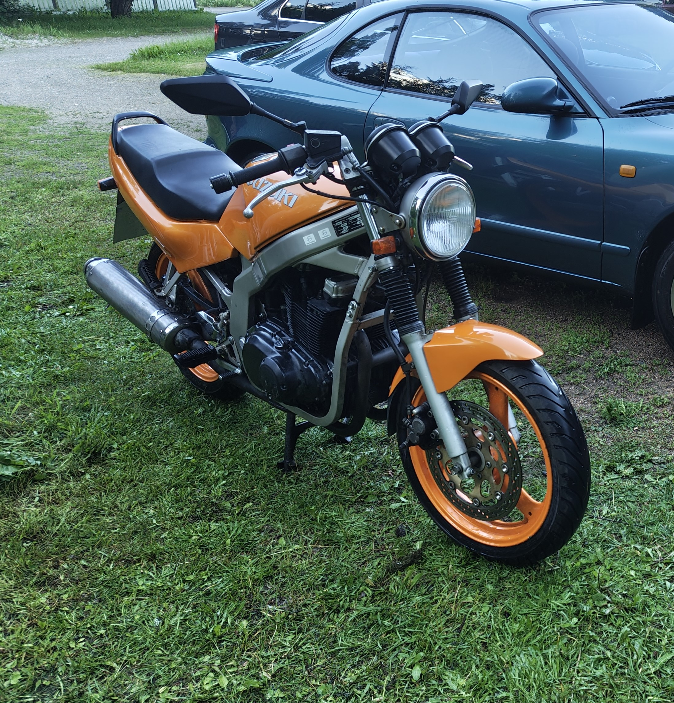

Millainen se on ensipyöränä?
Suzuki GS500E on loistava ensipyörä, sillä se on kevyt, helppo käsitellä ja halpa huoltaa. Vanhemmissa malleissa, kuten omassa 1992 vuoden mallissani on 34kW tehoa, joten pyörää voi ajaa A2 kortilla (Max. 35kW). Itse ajoin korttini opetusluvalla tällä pyörällä.
Vuoden 1992 Suzuki GS500E:ssä on 487cm³, 2-sylinterinen ilmajäähdytteinen 4-tahtimoottori, joka tuottaa tehoa 34kW eli 46hp ja vääntöä noin 40Nm. Pyörä on 6-vaihteinen ja huippunopeus on 170km/h. Pyörä painaa 180kg täydellä 17 litran tankilla.
Yhden kesän ajojen jälkeen voin todeta, että pyörä on ollut luotettava, eikä pelkoa tielle jäämisestä ole ollut. Pyörällä oli helppo harjoitella käsittelyä korttia varten. Kortin saannin jälkeen pyörällä on ajettu useita pitkiä lenkkejä, joista pisin on ollut noin 600 km. Kaiken kaikkiaan pyörällä on ajettu kesäkuun ja syyskuun välisenä aikana noin 4000 km.